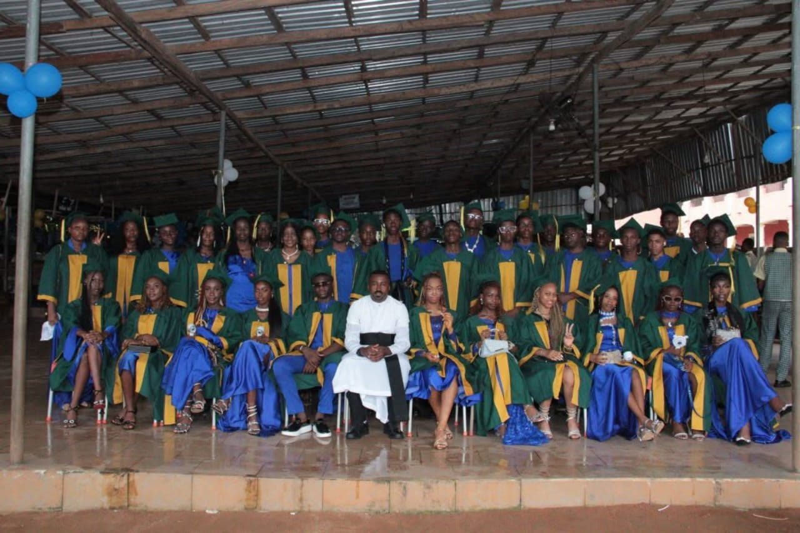

A Special Celebration
The graduation ceremony brought together graduating students, school leaders, families, teachers and members of the wider school community to celebrate the achievements of the students.
Graduating Students

Academic Recognition
Outstanding students were recognised during the ceremony for their academic achievements. The school celebrates these students as examples of commitment and hard work.
Top Three Graduating Students
The graduation ceremony recognised students who achieved first, second and third positions. Their individual photographs and detailed achievements can be added to this section as the official information is provided.
Best Graduating Student

The best graduating student is also remembered for her participation in the NNPC/SEPLAT competition 2025. The loenardi team took third position and received a sum of ₦50,000 each and the sum of 1,000,000 for the school. Udunwa Sonia has been the best student in her class since her entry into the school in 2020, she has participated in several competitions within and outside the school and always came out victorious. Sonia also came top in SSCE with the best result in the school in 2026. it was a great honor having her in the school. ALL thanks to the Principal/Director Rev. Fr. Kingsely C. Umeadi OMD, for his immense contribution towards her academic excellence.
More Graduation Memories